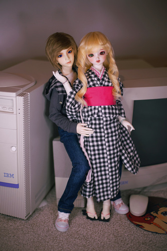
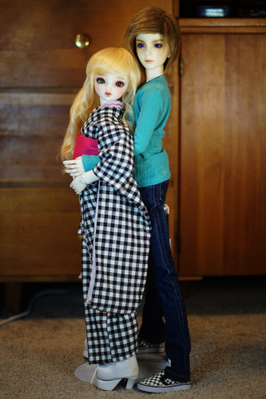
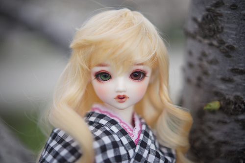
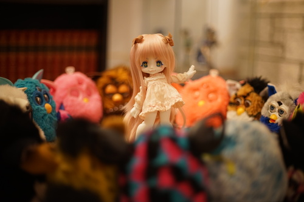
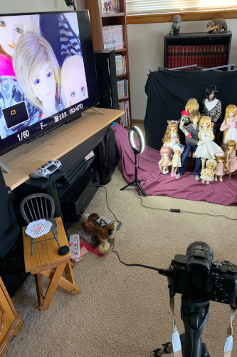

11 BJD, 2 not-quite-BJD, 2 Licca, 5 other. Also a pile of barbies and other dolls in my mom's basement. Let's go with 20?
I can't choose between NS and WS. WS has a more radiant feeling, but both are good. Paper white isn't what I mean by white either. Praline does not count!
Now I have no idea what color I'll decide on for my 58chan...
All of the 1/3rd resin dolls have some sort of story to them. No one smaller does. The first three boys had profiles and characters written from when I was a teen. I no longer write stories or comics about them, but their relationships kind of developed in my head anyway. I can't say I won't draw them though.
I moved away from thinking of stories for them for a long time, but it is really fun to imagine Liam leaving Hina at the altar to run off with his ex bf Verona. (Not yet canon)
They're mostly from songs, locations, or just cute!
58chan. Codi, do your best! Cheby needs a girl!
Not unless it's to take photos. I'd also take them out for a meetup!
Dress clothes but I'm not skilled enough to make them yet.
I take the ones in my chest out for smoochies at least a couple times a week.
Others may not see the light of day for months.
None...
Getting at least one eye in focus. I want to improve at creating natural and more interesting poses though.
Crochet hooks, a piece of wire bent in half, a hairbrush and comb (not used on human hair), and toothbrush.
Depends on what they're wearing. It takes at least half an hour to get Hina in her kimono, so if I put that on, it's staying on for a few months.
The boys don't really have much to switch out into but sometimes I'll swap pieces between them.
I haven't played much with my minis so I don't think they've been changed in a year.
I really love to look at the landscape + doll photography. I do none of this myself.
I want to take Hina to Tenshi no Sato for an omukae ceremony ;________;
The doll itself. I'm too stingy to spend money on anything else. It's a curse.
New wigs, shoes, and eyes for my current dolls. I know where I would get wigs but I'm stumped on everything else.
This one. I'm gonna need another girl. Wait, can I get my boys to do this??
In the cardboard photo boxes they sell at Joanns, Hobby Lobby, etc. I also store wigs, shoes, and other accessories in them. Mine are a little full now...
Wow!! You want a Lieselotte?! Good choice!
I received 3 and a head in 2009. I received 3 in 2010. Yikes...
I haven't taken my dolls to a photo studio, so I will say the cherry trees nearby when they are in bloom.
Ones that tell a little story between the dolls in the photo.
Hina. hina hina hina.

Goofy ones like Praline in dumb situations.
I secretly love shipping my dolls... Shh.... Those are a secret and you might have to go searching for those.
I've never been to a physical BJD store so I can't say I've picked up a coordinate model or in stock doll. Sochi would probably be the closest. I saw my friend had her listed on DoA and asked her to bring her. I paid for her after assembling her.
Any Japanese event! Dolpa would be great, but the non-Volks events would also be fun. The dealers halls in Japan are much more creative than the ones in the US.
A DearSD. I can't tell if I would love her like my 1/3rd dolls though. I might enjoy my 1/3rd scale dolls because they look closer to adults and I can make my own little stories about them together. DSD are beyond cute but perhaps too young for me to enjoy thinking of a backstory for.
I am waiting for nothing from anyone.
I mostly make them! I have some old pieces from 10 years ago that were purchased but I do enjoy making clothes for them myself.
Hands! More hands! I would kill to have a set of hands for each of my boys. The iplehouse oYID static sausage hands make shooting so much less fun. I wish I had at least fists for them.
Hina's heterochromia was temporary at first but now she's stuck with them. I can't imagine her without them anymore. Liam really needs a new wig, but I don't really share his wig with anyone else. Everything else can be swapped at any time.
Sony a7II, Canon FD 50mm f/1.4, 2 selfie ringlights, LED string lights, gameboy camera, a couple lens filters. Some doll stands too!
I hate being a follower and would rather be a friend if I am speaking to you. My interactions will be limited to saving your photo or linking your site if I am not talking to you.
Hina is my boss and I can tell when she refuses to cooperate during photoshoots.
Doll shoes? My hot takes on many doll companies? Choo? Do not talk to me about Danny Choo.
Not really anymore. My best friend has dolls and I see her maybe once a year, but we don't bring dolls to each other.
Indoors and outdoors. I don't even think I could afford a studio if I did have one accessible to me.

Hello? Is anyone other than hors reading this??
Don't settle! Starter doll is a meme! Do your research!
thanks for coming to my ted talk.